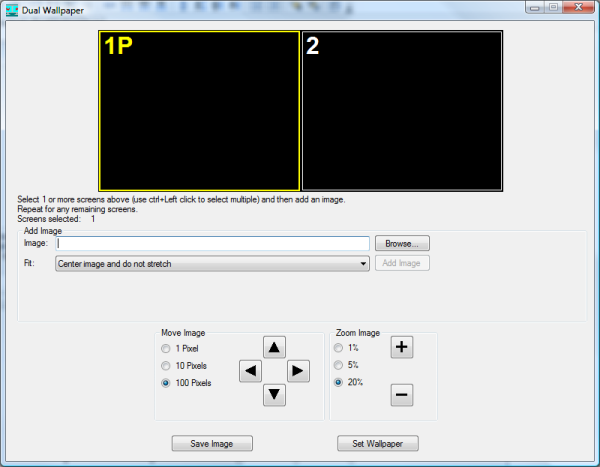
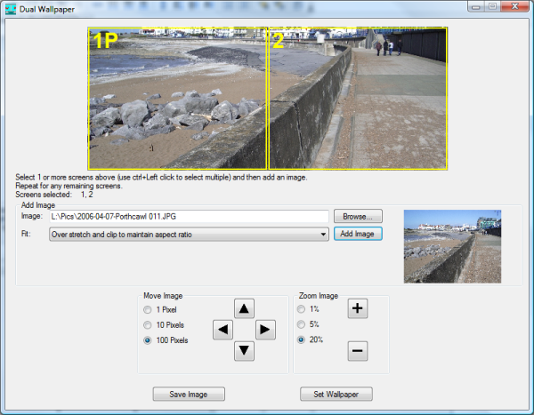
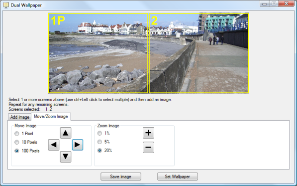

Dual Wallpaper
Dual Wallpaper
Dual Wallpaper simplifies the process of using images as wallpaper on multiple monitor setups.
You can have a single image which is spread across all of your monitors, or you can have different images on each monitor, or if you have enough monitors, you could say have an image spread across 2 of your monitors with another image displayed on the third monitor.
It also correctly sets the wallpaper when your primary monitor is not your leftmost or topmost monitor.
Usage
When DualWallpaper.exe is run it will look similar to the following.
The area at the top of the window displays a representation of how your monitors are arranged logically. It makes sense if your monitors are also arranged physically like this as well, but this may not always be the case.
The screen number is displayed on each monitor, and the primary monitor also has a 'P' after the screen number.
It is possible to select a particular monitor by clicking on its representation in this window. You can also select multiple monitors by holding down the control key when you click on the monitors. The selected monitors are highlighted with a yellow border.
To add an image to one or more monitors, first select those monitors and then click on the browse button to choose an existing image file to use. When you have done this, a thumbnail of the image is shown to the right of the 'Browse' button.
If the image size is not the same size as the rectangle enclosing all of the selected screens, then the 'Fit' combo box determines any scaling that need to be applied to the image. The available options are:
- Center image and do not stretch. This is the default option and will result in each pixel in the image mapping to a single pixel on the screen. If your image is larger than the selected monitors, then the image will be clipped. If The image is smaller than the selected monitors, then a border will be displayed around the image.
- Stretch ignoring aspect ratio. This will stretch or shrink so that the whole image is displayed occupying the whole area of the selected monitors.
- Over stretch and clip to maintain aspect ratio.
- Under stretch and add bars to maintain aspect ratio.
You can then click the 'Add Image' button which will add the image to the selected monitors in the preview like the following where a single image was applied to 2 monitors using the over stretch fit option.
If you have further monitors, then you can select these and repeat the process using either the same image or a different image.
If you wish to move the image around, or zoom in or out, then select the 'Move/Zoom Image' tab.
For example in the above image, you may want more of the sky visible, so if you press the up button in the 'Move Image' box a couple of times, you will end up with the following:
When you are happy with the preview, you can click the 'Set Wallpaper' button at which point you should see your new wallpaper displayed on your desktop.
When you use the 'Set Wallpaper' button, the wallpaper image is saved to a file at the following location: %LOCALAPPDATA%\GNE\DualWallpaper\DualWallpaper.bmp. This means that each time you use this button, you will overwrite the previous wallpaper generated with this application. If you use a third party wallpaper changer, then instead you may want to save your wallpapers to the directory that this third party application uses by using the 'Save Image' button.
Command line usage
Dual Wallpaper can be run from the command line to set the wallpaper without any graphical user interface so may be used from a batch file. Usage is in the form:
<Path to DualWallpaer executable> [options] <Path to image file>
The current options are:
-? show usage
-v show version
-so over stretch image to fit, maintaining aspect ratio (default)
-su under stretch image to fit, maintaining aspect ratio
-sc center image with no stretching
-sf stretch to fit in both directions